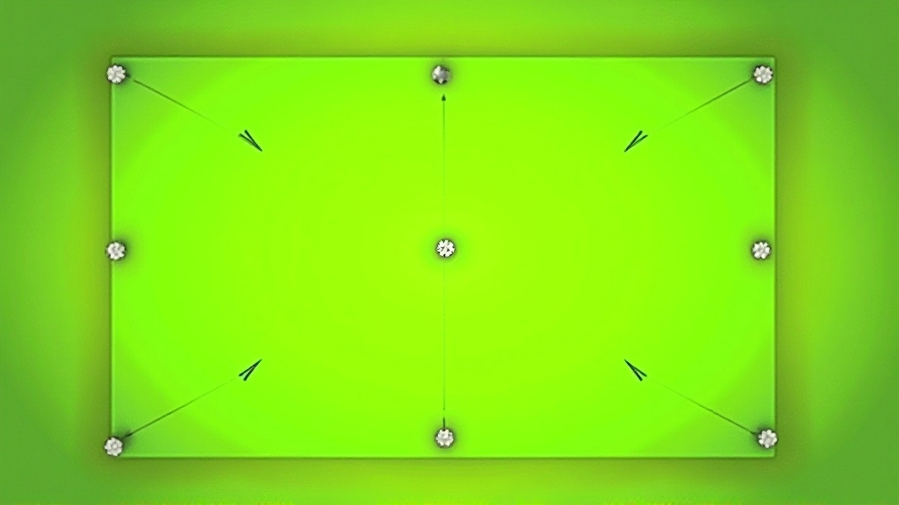
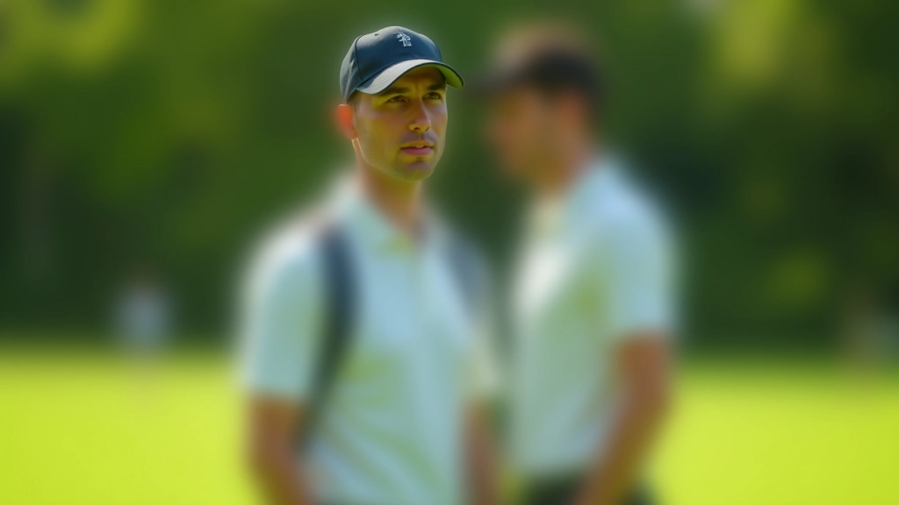
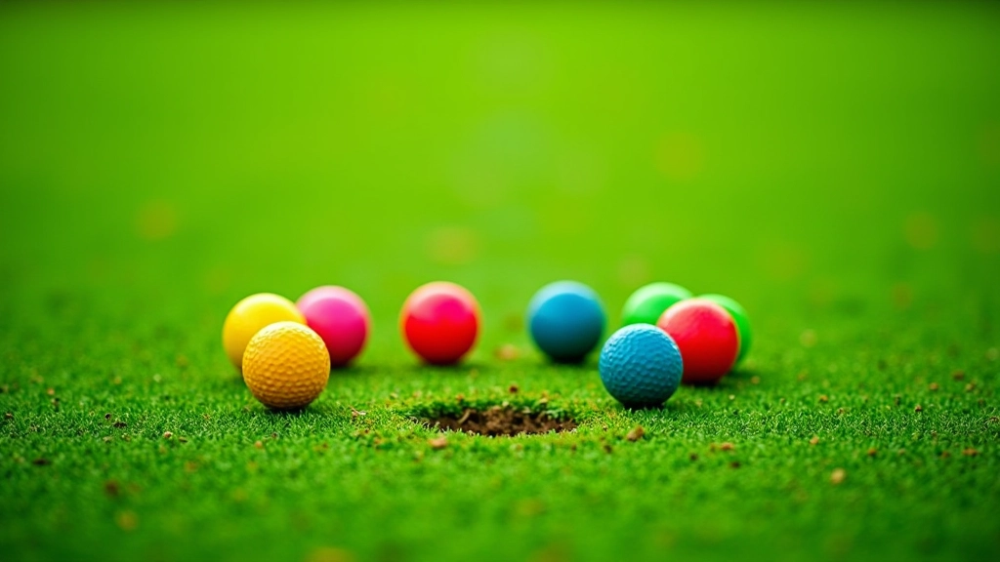

بطولات الفريق: التنسيق والاستراتيجية
كيفية تنظيم بطولة فريق احترافية. نصائح عملية عن اختيار الفريق والتدريب والتكتيكات الفعالة.
اقرأ المقالشرح مفصل لقواعد المباراة الفردية وكيفية حساب النقاط والفوز. تعلم كل ما تحتاج معرفته لبدء اللعب بثقة.


الكاتب
فريق التحرير والمراجعة
كتبه فريق ملعب الكروكيه التحريري، متخصص في تقديم شروحات عملية وسهلة الفهم لأنظمة البطولات. نركز على تفاصيل حقيقية تساعدك تفهم اللعبة بشكل أعمق.
المباراة الفردية هي الشكل الأساسي لكرة الكروكيه. لاعب واحد يلعب ضد آخر، والفكرة بسيطة لكن تحتاج فهماً دقيقاً للقواعد. في هذا الدليل، نشرح لك كل شيء تحتاج معرفته — من كيفية البداية إلى كيفية حساب النقاط والفوز.
كل مباراة فردية تدور حول هدف واحد: إرسال كرتك عبر سلسلة من الأقواس (الحدائد) بترتيب معين وفي اتجاه محدد. الملعب الكروكيه القياسي يحتوي على 6 أقواس، وترتيبها ليس عشوائياً — إنه تصميم دقيق يتطلب مهارة حقيقية.
عندما تمر كرتك عبر قوس بالاتجاه الصحيح، تحصل على نقطة واحدة. بسيط جداً. لكن هناك تفاصيل — يجب أن تمر الكرة من خلال القوس في اتجاه محدد، وليس العكس.
الملعب مقسم إلى نصين: النصف الأول (الأقواس 1 و2) والنصف الثاني (الأقواس 3 و4). كل لاعب يحتاج أن يكمل جميع الأقواس بالترتيب الصحيح. هذا يعني أن اللاعب الذي يصل للقوس رقم 5 أولاً ليس بالضرورة سيفوز — لأن اللعبة تتطلب إكمال الدورة كاملة بشكل صحيح.

حساب النقاط في المباراة الفردية ليس معقداً، لكنه يحتاج انتباهاً. كل قوس تمر عليه = نقطة واحدة. لكن هناك أشياء مهمة جداً: يجب أن تمر الكرة من خلال القوس من الاتجاه الصحيح. إذا دخلت من الاتجاه الخاطئ، لا تحسب كنقطة.
الاتجاه صحيح: يجب أن تعرف أي اتجاه هو الصحيح للقوس. الأقواس الأولى والثانية لهما اتجاه، والأقواس التالية لهما اتجاه آخر.
الكرة الكاملة تمر: يجب أن تمر الكرة بالكامل عبر القوس. لو علقت نصفها فقط، لا تحسب.
لا يوجد تجاوز: كرتك تمر بالقوس، لكن تعود للخلف؟ لا يهم — إذا مرت بالاتجاه الصحيح، فهي تحسب كنقطة.
في المباراة الكاملة، كل لاعب يحتاج أن يحقق 12 نقطة (6 أقواس × 2 = 12). لكن انتظر — هناك جزء أخير. بعد إكمال كل الأقواس، يجب أن تصل كرتك إلى نقطة النهاية (الوتد) وتضربها. هذه نقطة إضافية واحدة.
كل لاعب جديد يرتكب نفس الأخطاء تقريباً. أهم شيء: فهم القوس بشكل صحيح. كثير من الناس يعتقدون أنهم مروا بقوس، لكنهم في الحقيقة لم يمروا من الاتجاه الصحيح.
الكثير يفترضون أن أي اتجاه يعمل. لا. كل قوس له اتجاه محدد. الأقواس 1 و2 تحتاج لاتجاه واحد. الأقواس 3 و4 تحتاج لاتجاه آخر. إذا ضربت الكرة من الاتجاه الخاطئ، لا تحسب النقطة حتى لو مرت الكرة فعلاً.
في بعض الأحيان، كرة الخصم تكون بين كرتك والقوس. لا تضربها بقصد! هذا مخالفة. إذا اضطررت لتفاديها، تحرك كرتك بشكل مختلف. القاعدة: لاعب واحد فقط يتحرك في كل دورة.
بعد ما تضرب الكرة، يجب أن تنتظر دورة الخصم. لا تستطيع تحريك الكرة مرة ثانية في نفس الدورة إلا إذا حققت نقطة. هذا أساسي جداً في اللعبة.


كل مباراة فردية واضحة جداً عندما تفهم النقاط. أنت تحتاج 13 نقطة لتفوز: 6 أقواس في الاتجاه الأول + 6 أقواس في الاتجاه الثاني + 1 نقطة للوتد (الهدف النهائي). هذا المجموع يساوي 13.
أول لاعب يحقق 13 نقطة بشكل صحيح يفوز بالمباراة. هذا بسيط وواضح. لكن هناك تفاصيل إضافية تجعل اللعبة مثيرة — مثل الضربات الخاصة والمخالفات. لكن للمبتدئين، هذا الأساس يكفي لبدء اللعب.
المباراة الفردية في الكروكيه تدور حول ثلاثة أشياء بسيطة: تمرير كرتك عبر الأقواس بالاتجاه الصحيح، حساب النقاط بدقة، والفوز بـ 13 نقطة. عندما تفهم هذه الأساسيات، تستطيع تبدأ تلعب. كل شيء آخر — مثل الضربات الخاصة والحالات المعقدة — ستتعلمه مع الوقت والممارسة.
المهم أنك الآن تعرف القواعد الأساسية. ابدأ بمباراة واحدة، اتعلم من أخطائك، وستصبح أفضل. كل لاعب محترف بدأ من هنا — من فهم هذه الأساسيات البسيطة لكن المهمة.
هل تريد معرفة المزيد عن أنظمة البطولات الأخرى؟
اقرأ عن بطولات الفريقهذا الدليل يقدم شرحاً تعليمياً لقواعد المباراة الفردية في الكروكيه. القواعس الفعلية قد تختلف حسب الاتحادات والمنظمات المختلفة. ننصح دائماً بالرجوع للقواعد الرسمية من الاتحاد المحلي أو الدولي قبل المشاركة في أي بطولة رسمية. هذا المحتوى مقدم لأغراض تعليمية فقط.
تعمق أكثر في عالم بطولات الكروكيه واكتشف المزيد من الأنظمة والقواعد
كيفية تنظيم بطولة فريق احترافية. نصائح عملية عن اختيار الفريق والتدريب والتكتيكات الفعالة.
اقرأ المقال
دليل عملي لتنظيم جدول البطولة، إدارة النتائج، وتحديث التصنيفات. نماذج جاهزة للاستخدام.
اقرأ المقال
كل ما يجب أن يعرفه الحكم عن القواعد والقرارات. حالات عملية وكيفية التعامل معها بحكمة.
اقرأ المقال